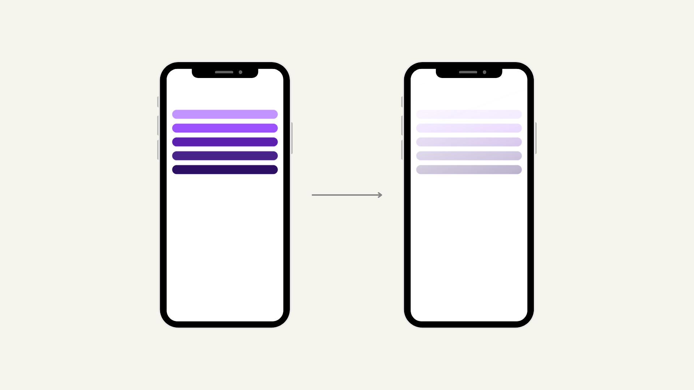
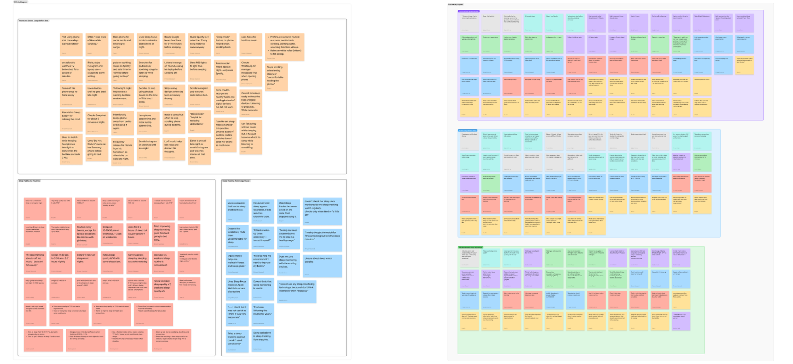
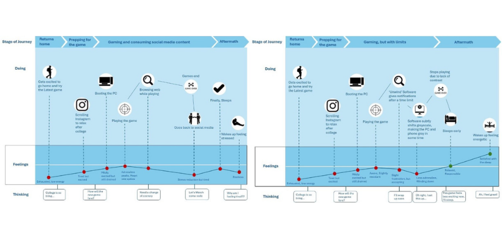
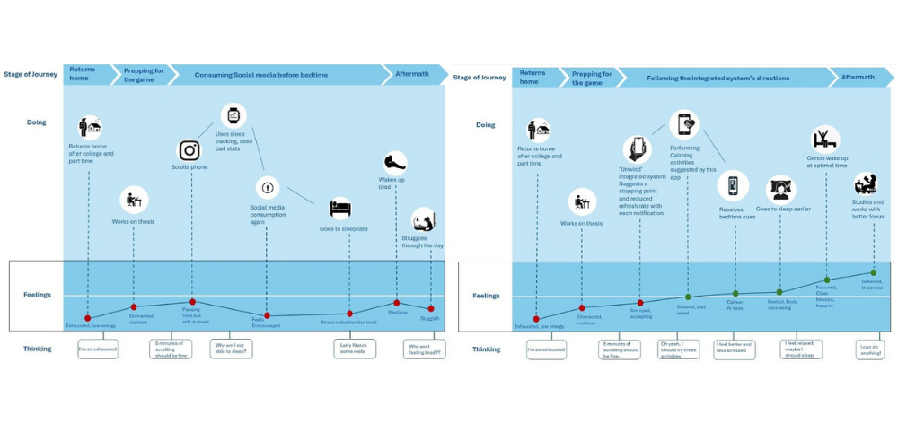

Unwind
Designing the exit from sleep procrastination — the behavioral loop that platforms profiting from your attention will never fix themselves.

The problem
nobody is incentivized to solve.
People know they should sleep. They keep scrolling anyway. Unwind investigates the gap between intention and behavior — and proposes a concept that interrupts the loop without treating users like the problem.
Why this matters. Existing screen-time tools optimize for awareness, not for action. They show you yesterday's damage. They don't catch you in the moment. And the platforms designed to hold your attention — by definition — won't help you put the phone down.
Listening before solving.
A mixed-method study designed to map the procrastination loop from the inside out. We deliberately avoided self-report-only data — diary entries captured behavior in context, while interviews surfaced the stories people tell themselves.
8 Participants
Recruited via screener; ages 19–34, mix of students and early-career professionals. All self-identified as struggling with bedtime use.
7-Day Sleep Log
Participants logged intended bedtime, actual bedtime, and what kept them up. Captured 56 entries with context, not just timestamps.
60-min Semi-Structured
Probed motivations, friction points, and prior coping attempts. Walked through the previous night with each participant in detail.
Four insights that shaped the concept.
"Just one more" is rarely about content.
Participants kept scrolling not because anything was urgent, but because stopping required a deliberate action. Friction worked against them — they had to choose to put the phone down, every time.
Trackers create guilt, not change.
7 of 8 participants had used a screen-time app. None changed behavior. Reports showed up the morning after — too late, too abstract. Awareness without intervention is shame at scale.
The decision happens at 11:47, not 11:00.
There's a specific moment — usually 30–60 min after intended bedtime — when participants either close the app or commit to another hour. Hitting that window is the entire game.
Replacement beats restriction.
Tools that simply blocked apps were uninstalled within days. Participants needed somewhere for their attention to land — a soft off-ramp, not a wall.
From data to concept.
Inductive coding of 56 diary entries + 8 transcripts
Open-coded raw data, surfaced 23 themes, clustered into four behavioral patterns. No predetermined frameworks — let the data speak first.
Mapped the procrastination loop
Built a behavioral diagram of the trigger → reward → guilt cycle, identifying three intervention points where friction could be re-introduced for the user.
15 concepts, narrowed to 3
Generated wide, then filtered against research insights. Killed anything that relied on willpower alone or duplicated existing tracker patterns.
A wind-down companion, not a tracker
Final concept: a soft intervention that activates 30 min after intended bedtime, offers replacement micro-rituals, and lets users opt-in rather than imposing rules.
Clustering the raw data.
A wall of color-coded notes from diary entries and interview transcripts — clustered until the four behavioral patterns surfaced.

A quieter end to the day.
To articulate the intervention, two journey maps were built — one for the existing behavior loop, one for the proposed loop under the Unwind concept. Side-by-side, they make the change visible: fewer red feelings, an earlier off-ramp, a quieter morning.


What the work taught me.
The most valuable insight came from a participant who said, "I'm not addicted — I just don't have anywhere else to put the energy at midnight." That reframed the whole problem. We weren't designing against a habit. We were designing for a moment that didn't have a script yet.
— Notebook entry, Week 6Next steps. Validate the concept with a higher-fidelity prototype and a two-week field study. Specifically test whether the soft intervention timing holds up across chronotypes, and whether the replacement micro-rituals retain meaning over time or fade into noise.